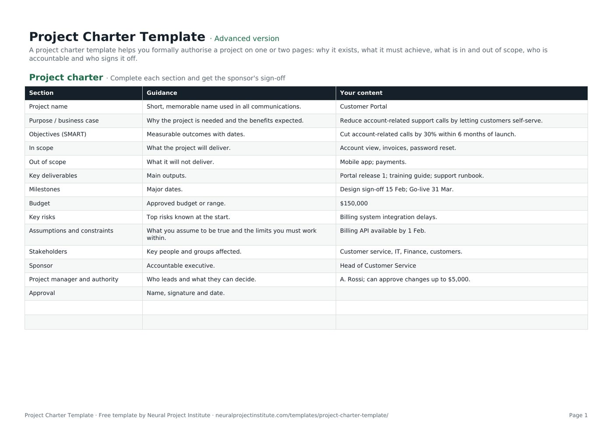

Free Project Charter Template (With Example)
This free project charter template lets you authorise a project on one or two pages: why it exists, what it must achieve, what is in and out of scope, who is accountable and who signs it off. Each of its 14 sections has guidance and a completed example you can overwrite. Download it for Google Sheets, Excel or PDF.

Key takeaways
- A project charter is the short document that formally authorises a project, names the sponsor and project manager, and sets its objectives, scope and limits.
- The template covers 14 sections, from purpose and SMART objectives to budget, risks, the project manager's authority and the approval line.
- Write it with the sponsor, not for the sponsor. The objectives and scope should be theirs, in words they agree with.
- Keep it to one or two pages. Detailed schedules, budgets and plans belong in the project management plan.
- A charter only counts once it is signed. Store it with the plan and revisit it at major milestones or when the purpose or scope changes.
Free download · no sign-up
Get the project charter template
Pick your level and format: Google Sheets, Excel or a print-ready PDF. Spreadsheets include dropdowns, formulas and sample rows you can overwrite.
What is a project charter?
A project charter is a short document that formally authorises a project. It states why the project exists, the objectives it must achieve, its high-level scope, milestones, budget and risks, and it names the sponsor and the project manager and sets out the project manager's authority. Once the sponsor signs it, the project officially exists.
The PMBOK Guide describes the charter as a document issued by the project initiator or sponsor that authorises the project and gives the project manager the authority to apply organisational resources to it. That is the key point: the charter is about authorisation and boundaries, not detailed planning.
It is not the business case, which justifies the investment, and it is not the project plan, which explains how the work will be delivered. The charter sits between the two.
For the theory, examples and a deeper look at each component, see our project charter guide.
Project charter template preview
The preview shows the first sections with their guidance and the sample Customer Portal project. Replace the third column with your own content.
| Section | Guidance | Your content |
|---|---|---|
| Project name | Short, memorable name used in all communications. | Customer Portal |
| Purpose / business case | Why the project is needed and the benefits expected. | Reduce account-related support calls by letting customers self-serve. |
| Objectives (SMART) | Measurable outcomes with dates. | Cut account-related calls by 30% within 6 months of launch. |
| In scope | What the project will deliver. | Account view, invoices, password reset. |
| Out of scope | What it will not deliver. | Mobile app; payments. |
| Key deliverables | Main outputs. | Portal release 1; training guide; support runbook. |
Sample rows are examples: replace them with your own.
What's in the project charter template
The template has one tab, Project charter, with three columns: Section (the heading), Guidance (a prompt explaining what to write) and Your content (where your answer goes, pre-filled with a worked example). There are 14 sections, ending with an approval line for the sponsor's name, signature and date.
- Project charter: Section, Guidance, Your content
Which version should you download?
A charter is a structured document rather than a log, so it has no dropdowns or calculated fields. The three versions differ in the support around the charter page:
| Version | What you get | Best for |
|---|---|---|
| Beginner | The 14-section charter tab with guidance and example content, plus extra blank rows for any sections you want to add | Small or internal projects that need a quick, one-page mandate |
| Advanced | The same 14-section charter tab, formatted for filling in and printing | Most projects with a named sponsor |
| Expert | The charter tab plus an Instructions tab with the step-by-step method and a Revision history tab to record versions, changes and approvals | PMOs, client projects and anything that will be re-approved during its life |
What to include in a project charter
These are the 14 sections in the template, what to write in each and a tip for getting it right. Most published charter formats cover the same ground under slightly different names.
| Section | What to write | Tip |
|---|---|---|
| Project name | A short, memorable name used in all communications | Avoid internal codes nobody outside the team understands |
| Purpose / business case | Why the project is needed and the benefits expected | Summarise the business case in two or three sentences; do not paste it in |
| Objectives (SMART) | Measurable outcomes with dates | If you cannot measure it at the end, rewrite it. See SMART project objectives |
| In scope | What the project will deliver | List deliverables and boundaries, not tasks |
| Out of scope | What it will not deliver | Name the things people are most likely to assume are included |
| Key deliverables | The main outputs | Three to seven items is usually enough at charter level |
| Milestones | Major dates and decision points | Use summary milestones, not a schedule |
| Budget | Approved budget or a range | State whether it includes contingency |
| Key risks | The top risks known at the start | Three to five is plenty; the full list goes in the risk register |
| Assumptions and constraints | What you assume to be true and the limits you must work within | Every assumption is a risk if it turns out false. See project constraints |
| Stakeholders | Key people and groups affected | Groups are fine here; detailed analysis comes later |
| Sponsor | The accountable executive | One named person, not a committee |
| Project manager and authority | Who leads and what they can decide alone | Give real limits for spending and changes |
| Approval | Name, signature and date | Leave it blank until the sponsor has read the final version |
Why the project manager's authority matters
The authority row is the one most often left vague, and it is one of the main reasons a charter exists. Without it, every small decision travels up to the sponsor, or the project manager makes decisions nobody agreed they could make.
Be specific. Typical limits cover how much the project manager can spend or commit without approval, which changes they can approve themselves (for example, changes under a set number of days or a set cost), whether they can request or release team members, and when they must escalate. These thresholds then feed directly into your change control process and your change request template.
How to write a project charter step by step
Follow these steps in order. Most of the work is conversation with the sponsor; the writing is quick once you agree.
- Meet the sponsor first. Ask why the project matters now, what success looks like and what would make it a failure. Agree the purpose and objectives before you write anything else.
- Write SMART objectives. Turn the sponsor's goals into measurable outcomes with dates, such as "cut account-related calls by 30% within six months of launch".
- Set the scope and the exclusions. List what the project will deliver and, just as importantly, what it will not. Clear exclusions are your first defence against scope creep.
- Add milestones and budget. Use summary dates and an approved budget or range. Detailed estimates come later in planning.
- Record risks, assumptions and constraints. Capture the handful that could change the decision to start, such as a dependency on another system or a fixed regulatory date.
- Name the people. Add the sponsor, the project manager and the main stakeholder groups. A RACI matrix can follow once the team is known.
- State the project manager's authority. Agree spending and change limits and the escalation route with the sponsor.
- Review, then sign. Share the draft with key stakeholders, resolve comments, then ask the sponsor to sign and date the approval line.
- Store it and use it. File the signed charter with the project management plan and check decisions against it at each major milestone.
When to write the charter
Write the charter during initiation, after the idea has been approved in principle (often through a business case or feasibility study) and before detailed planning starts. It is the first output of the initiating phase described in our guide to project management phases. Starting detailed planning without a signed charter risks planning the wrong project.
Project charter example
Here is the full worked example from the template: a project to launch a self-service customer portal. Use it as a model for the level of detail a charter needs.
| Section | Example content |
|---|---|
| Project name | Customer Portal |
| Purpose / business case | Reduce account-related support calls by letting customers self-serve. |
| Objectives (SMART) | Cut account-related calls by 30% within 6 months of launch. |
| In scope | Account view, invoices, password reset. |
| Out of scope | Mobile app; payments. |
| Key deliverables | Portal release 1; training guide; support runbook. |
| Milestones | Design sign-off 15 Feb; go-live 31 Mar. |
| Budget | $150,000 |
| Key risks | Billing system integration delays. |
| Assumptions and constraints | Billing API available by 1 Feb. |
| Stakeholders | Customer service, IT, Finance, customers. |
| Sponsor | Head of Customer Service |
| Project manager and authority | A. Rossi; can approve changes up to $5,000. |
| Approval | Name, signature and date of the sponsor |
Notice what makes this example work:
- The objective is measurable. A 30% cut in calls within six months can be checked after launch, which makes the benefit real.
- The exclusions are the obvious assumptions. Customers and stakeholders could easily expect a mobile app or online payments; the charter says no up front.
- The risk and the assumption are linked. The billing integration risk exists because the plan assumes the billing API will be ready by 1 February.
- Authority has a number. The project manager can approve changes up to $5,000; anything larger goes to the sponsor.
The deliverables then become the top level of your work breakdown structure, and the milestones become anchors in the schedule.
Who writes, approves and signs the charter?
Practice varies by organisation, but the usual split looks like this:
| Role | Typical part in the charter |
|---|---|
| Sponsor | Owns the purpose, objectives and budget; approves and signs the charter; is accountable for the benefits |
| Project manager | Drafts the charter with the sponsor, gathers input and manages review comments |
| Key stakeholders | Review scope, exclusions, risks and assumptions that affect them |
| PMO or governance board | Checks the charter against portfolio priorities and standards, and may co-approve larger projects |
Where several executives are involved, agree who the single accountable sponsor is before anyone signs. Our guide to project governance explains how the charter fits with steering groups and approval routes.
Project charter vs other initiation documents
Several early documents overlap. This table shows how the charter relates to the others.
| Document | Main question it answers | Relationship to the charter |
|---|---|---|
| Business case | Is this worth doing? Costs, benefits, options | Comes before the charter; the charter summarises it |
| Project brief | What is the idea, in short? | A lighter overview for alignment; the charter adds formal authority. See the project brief template |
| Project charter | Is the project authorised, and within what limits? | The formal mandate |
| Project initiation document (PID) | How will the project be governed and controlled? | A fuller document used mainly with PRINCE2; it covers similar ground in more depth. See project initiation document |
| Project scope statement | Exactly what will and will not be delivered? | Expands the charter's scope section. See the project scope template |
| Statement of work | What will a supplier deliver, and on what terms? | A contractual document for external work. See statement of work |
| Project management plan | How will the work be delivered and controlled? | Comes after the charter and must stay within it. See the project plan template |
PRINCE2 does not use the term "charter". Its project brief and project initiation documentation cover the same ground, so if your organisation follows PRINCE2, use those names and treat this template as a starting checklist.
Project charters in Agile projects
Agile teams use charters too, usually in a lighter form. A team or product charter agrees the vision, the goal for the next release or period, the boundaries the team works within and who makes which decisions, without fixing detailed scope that the backlog will refine.
To use this template for an Agile project:
- Write the purpose as a product vision or problem statement.
- Express objectives as outcomes or measures rather than a fixed feature list.
- Keep in scope high level, for example the epics or capabilities you expect, and keep out of scope firm.
- Use milestones for release dates or review points rather than a phase plan.
- Name the Product Owner alongside the sponsor and state their authority over the backlog.
Common project charter mistakes
- Writing the plan inside the charter. Ten pages of tasks and dates make the charter hard to approve and quick to go out of date.
- Vague objectives. "Improve customer experience" cannot be measured. Add a number and a date.
- No exclusions. Without an out-of-scope list, every stakeholder fills the gap with their own expectations.
- No real authority. If the project manager's limits are not written down, decisions stall or get made by the wrong person.
- Skipping the signature. An unsigned charter is a draft. Get the sponsor's name and date on it before detailed planning starts.
- A committee as sponsor. Name one accountable person, even if a board oversees the project.
- Filing it and forgetting it. Revisit the charter at major milestones and re-approve it if the purpose, scope or budget changes significantly.
Related templates and guides
The charter is the first of several initiation documents. Before it, a business case justifies the investment. After it, the project scope template expands the scope, the RACI matrix template and communication plan template set out roles and updates, the risk register template tracks risks, and the project plan template shows how the work will be delivered. For requirements-heavy projects, follow with a business requirements document.
 Project Plan TemplateFree project plan template with goals, scope, deliverables, tasks, owners, dates and…Beginner · Advanced · Expert
Project Plan TemplateFree project plan template with goals, scope, deliverables, tasks, owners, dates and…Beginner · Advanced · Expert RACI Matrix TemplateFree RACI matrix template to map who is Responsible, Accountable, Consulted and Informed…Beginner · Advanced · Expert
RACI Matrix TemplateFree RACI matrix template to map who is Responsible, Accountable, Consulted and Informed…Beginner · Advanced · Expert Project Scope Statement TemplateFree project scope template: objectives, deliverables, in scope, out of scope, acceptance…Beginner · Advanced · Expert
Project Scope Statement TemplateFree project scope template: objectives, deliverables, in scope, out of scope, acceptance…Beginner · Advanced · Expert Business Case TemplateFree business case template: problem, options, costs, benefits, ROI, payback, risks and…Beginner · Advanced · Expert
Business Case TemplateFree business case template: problem, options, costs, benefits, ROI, payback, risks and…Beginner · Advanced · Expert Work Breakdown Structure (WBS) TemplateFree work breakdown structure template with WBS codes, levels, deliverables, owners,…Beginner · Advanced · Expert
Work Breakdown Structure (WBS) TemplateFree work breakdown structure template with WBS codes, levels, deliverables, owners,…Beginner · Advanced · Expert Project Brief TemplateFree project brief template for a one-page project overview: background, goals, audience,…Beginner · Advanced · Expert
Project Brief TemplateFree project brief template for a one-page project overview: background, goals, audience,…Beginner · Advanced · Expert- What Is a Project Charter? Template, Examples and Tips
- Project Objectives: How to Write SMART Goals (With Examples)
- Project Scope: Definition, Scope Statement and Examples
- Project Initiation Document (PID): Contents and Example
To understand each charter component in more depth, read our project charter guide.
Frequently asked questions
What is a project charter template?
A project charter template is a ready-made outline for the document that formally authorises a project. It prompts you to record the purpose, objectives, scope, milestones, budget, risks, stakeholders, sponsor, project manager and their authority, and the approval.
Is this project charter template free?
Yes. The project charter template is free to download as a Google Sheet, Excel file or PDF, with no sign-up.
What should a project charter include?
Purpose or business case, SMART objectives, scope and exclusions, key deliverables, milestones, budget, key risks, assumptions and constraints, stakeholders, the sponsor, the project manager and their authority, and an approval section with signature and date.
Who writes the project charter?
Usually the project manager drafts it with the sponsor. If no project manager has been appointed yet, the sponsor or a business analyst may write it, and the charter then appoints the project manager.
Who signs the project charter?
The project sponsor signs it, because the sponsor authorises the project and is accountable for its benefits. Some organisations also ask a PMO or governance board to co-approve larger projects.
How long should a project charter be?
One to two pages is ideal, and rarely more than four. If yours is longer, move detail into the project management plan, the scope statement or the risk register.
What is the difference between a project charter and a project plan?
The charter authorises the project and sets its objectives, scope and limits at a high level. The project plan comes afterwards and explains how the work will be delivered within those limits.
What is the difference between a project charter and a business case?
A business case justifies the investment by comparing options, costs and benefits. The charter comes after the business case is accepted and turns it into a formal mandate for a named sponsor and project manager.
Is a project charter the same as a project initiation document (PID)?
They overlap. A PID, used mainly with PRINCE2, is usually longer and also covers how the project will be governed and controlled. A charter is shorter and focuses on authorisation, objectives, scope and roles.
Can I use the project charter template for Agile projects?
Yes. Use a lighter version focused on vision, outcomes, boundaries, roles and release milestones, and let the backlog hold the detailed scope.
Can a project charter be changed after it is approved?
Yes, but only for significant changes to purpose, scope, budget or authority. Update the charter, record the change in the revision history and ask the sponsor to re-approve it.
Can I use the project charter template in Word?
The download is a spreadsheet and a PDF. You can copy the sections and example content into a Word document if your organisation prefers Word; the structure works the same way.